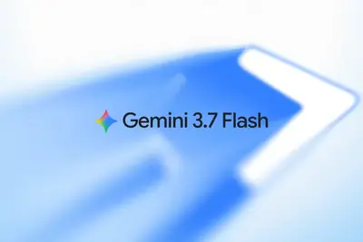
模型與研究AI 每日新聞彙整
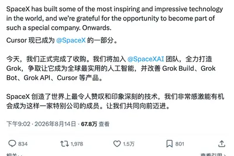
企業與資金全部主題
模型與研究
重點3 家媒體報導flash3.7google
Google 推出 Gemini 3.7 Flash，價格砍半搶攻 AI 編碼市場
Google 於 8/13 發布 Gemini 3.7 Flash，距離上一版僅三週，主打更強的軟體工程、代理開發與推理能力，並祭出年底前 API 價格為前代一半的促銷，每百萬 input tokens 0.75 美元、output tokens 3.75 美元。此舉被視為 AI 模型價格戰升級，也讓 Flash 系列從低延遲定位轉為 Agent 日常主力。
重點3.8qwen3.8-27bqwen3.7-plus
阿里開源Qwen3.8-27B模型，編程辦公性能超越Plus版
阿里巴巴開源Qwen3.8-27B，為原生多模態稠密模型，支援262K上下文，可外推至1M。在編程與辦公場景表現超越Qwen3.7-Plus，並新增reasoning_effort功能以節省資源。
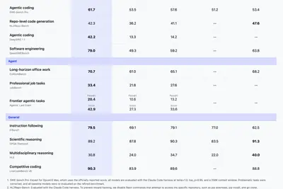
重點crouzeixbaidutownsend
中國醫生用GPT-5.6破解22年數學難題，獲原作者確認
北京協和醫院醫生金山木使用OpenAI GPT-5.6-Sol模型，在16小時內證明Crouzeix猜想，經數學家與猜想提出者審閱確認正確。此案例顯示AI在數學研究中的潛力。
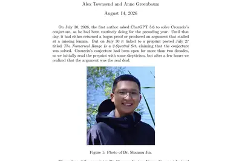
重點glm-5.35.3glm-5.2
傳蘋果與阿里合作開發中國專屬大模型，智譜發布 GLM-5.3 開源模型
據報導，蘋果正與阿里巴巴合作開發專為中國市場訓練的 AI 模型。同時，智譜發布 GLM-5.3，號稱最強開源程式設計模型。其他科技新聞包括追覓賣出首台超過 3 萬美元的手機，以及微信重申朋友圈不開放二次編輯。
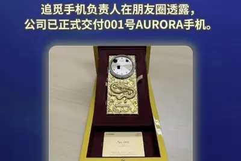
重點warchineserivals
OpenAI與Anthropic降價應對中國AI對手崛起
面對中國AI競爭對手的崛起，OpenAI和Anthropic發布更便宜的模型，展開價格戰，以維護其萬億美元市場野心。
rampindexopenai
Ramp調查：Anthropic企業採用率連續4個月領先OpenAI
美國企業支出管理平臺Ramp公布最新AI Index調查，顯示美國企業持續增加AI支出，但對價格昂貴的最新模型接受度有限。Anthropic自今年4月首度超越OpenAI以來，已連續4個月保持領先，反映企業市場對其模型的偏好。
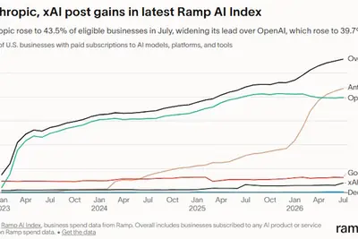
產品與應用
重點2 家媒體報導samsungclaudecode
三星導入 Claude Code 加速晶片驗證，一個月工作縮短至兩天
三星電子將 Anthropic 的 Claude Code 導入客製化 SoC 的功能驗證與前期軟體開發，內部專案原本需超過一個月的驗證環境建置與驗證工作，在兩天內完成，效率提升約 15 倍。此舉不僅縮短研發時程，也反映三星 System LSI 部門面臨的人力挑戰，以及生成式 AI 進入半導體核心流程的趨勢。
- 科技新報 TechNews 三星傳導入 Claude Code 加速晶片設計驗證，月餘工作縮短至兩天完成
- TechOrange 科技報橘 三星用 Claude 把晶片驗證從 1 個月壓縮到 2 天：不只拚效率，更想縮小與高通的工程人力差距
2 家媒體報導visibleremovewatermark
Google 允許用戶關閉 Gemini 生成內容的可見浮水印
Google 更新 Gemini 與 AI 影片生成器 Flow，新增「媒體浮水印」設定，用戶可關閉右下角的「閃光」標記。關閉後不影響用於識別 AI 生成檔案的隱形浮水印，仍可追溯來源。
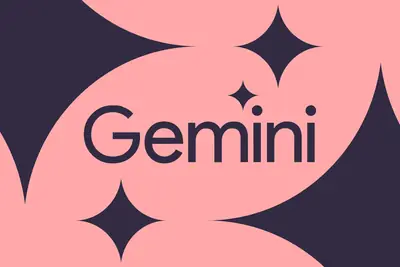
2 家媒體報導maccomputerhistory
ChatGPT 桌面版新增 Computer History，可記錄 Mac 使用活動
ChatGPT Mac 版推出 Computer History 功能，不需截圖即可記錄用戶在 Mac 上跨應用程式與網站的使用活動，並建立時間軸。此功能引發隱私疑慮，報導整理了三層隱私設定與開啟步驟。
meettakenotes
Google Meet新增實體會議筆記功能，自動轉錄並儲存
Google Meet的Gemini驅動功能現在可為實體會議生成逐字稿，自動儲存至Google Drive並寄送副本，方便與會者回顧。
testedandroidlets
Android App可將手機變Tor代理，協助對抗審查
一款Android應用程式讓用戶不需技術知識，即可將手機變成Tor代理，幫助受壓迫地區的人們突破網路封鎖，並即時顯示影響力。
chromechangegemini
Chrome測試Gemini AI修改密碼功能，自動替用戶更換弱密碼
Chrome Canary正在測試新功能，利用Gemini AI自動修改用戶的弱密碼或重複使用的密碼，取代傳統的引導式修改流程。此功能目前需透過Chrome://flag啟用，正式版預計數月後推出。
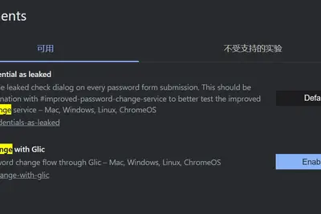
copilotappmicrosoft
微軟整併消費、企業版Copilot功能，為超級App鋪路
微軟宣布更新Copilot介面，將消費版和商務功能整合，同時終止Deep Research、Podcast等功能。新Copilot提供更簡單全面的體驗，用戶可用私人或公司帳號登入，介面外觀、瀏覽動線及登入方式均有變更，為超級App鋪路。
- iThome 微軟整併消費、企業版Copilot功能，為超級App鋪路
robotnextinfluencer
宇樹 G1 機器人爆紅，但能否勝任真實工作？
中國宇樹科技的四英尺高機器人 G1 因價格相對親民且能吸引群眾，在網路上爆紅，成為新興網紅。但報導質疑其能否在真實職場中承擔實際工作。
workchatgptriley
ChatGPT Work 實測：14 個上班族功能與高效工作流指南
ChatGPT Work 上線後，許多人仍停留在聊天模式。本文以 Riley Brown 的 61 分鐘實測為基礎，拆解 14 個功能的使用方法與優先順序，協助上班族打造高效 AI 職場工作流。
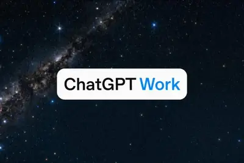
maximizingvaluesessions
Claude Code官方文章：最大化工作階段價值
Anthropic發布文章，探討如何最大化Claude Code使用效率，在Hacker News引起熱烈討論，獲得超過100點與83則留言。
- Hacker News (100+) Maximizing the value of your Claude Code sessions
dellxpsreview
Dell XPS 13評測：平價筆電品質標竿，但有取捨
Dell XPS 13在平價市場展現罕見的製造品質，被譽為可媲美高階機種，但仍有部分妥協。
v8x22.68vla
長城魏牌V8X上市，搭載雙VLA AI艙駕智慧體，限時價22.68萬元起
長城魏牌V8X正式上市，定位大五座旗艦SUV，配備雙VLA原生AI艙駕智慧體及超級Hi4混動系統，限時權益價22.68萬元起。
icarv251.5
奇瑞iCAR V25首發亮相，搭載地平線征程6P，預計Q4上市
奇瑞iCAR V25在成都首發亮相，定位科技時尚輕旗艦SUV，採用增程式動力，搭載「超級獵鷹700+」智駕系統（地平線征程6P晶片，算力560TOPS），預計今年第四季度上市。
企業與資金
重點cursorspacexxai
SpaceX以600億美元收購AI編程公司Cursor，成科技業史上最大收購之一
SpaceX完成對AI編程初創公司Cursor的600億美元收購，交易於8月14日正式生效。此舉被視為馬斯克追趕Anthropic和OpenAI的重要一步，旨在借助Cursor開發更先進的AI工具，簡化編程任務。
重點indosatindonesiacenter
印尼首座大學AI中心成立，由UGM、Indosat與NVIDIA共建
印尼加查馬達大學、Indosat與NVIDIA合作，在日惹成立該國首座大學AI技術中心（NVAITC），旨在培養本地AI人才，推動國家AI發展。
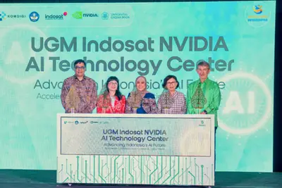
重點appier129
Appier毛利率首破60%，上修2026財測，全員導入AI代理
台灣AI公司Appier第2季營收129億日圓，毛利率首度突破60%，人均毛利年增38%，三項指標創新高並上修全年財測。執行長游直翰表示，這歸功於全員導入Agentic AI，讓員工人手數個AI代理，提升生產力。
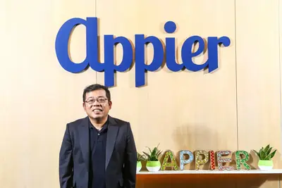
月之暗面發聲明：警惕冒名融資詐騙，已向公安機關反映
月之暗面發布嚴正聲明，提醒市場警惕冒用其名義的虛假融資及可疑交易，強調不存在所謂「朋友基金」、「老股額度」或「官方代理」，並已向公安機關反映涉嫌違法犯罪行為。
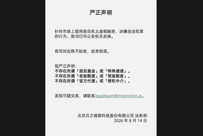
wizrajicdresser
OpenAI挖角Google旗下Wiz營運長，出任全球營收長
OpenAI宣布任命Dali Rajic為營收長，負責全球營收組織，接替上任僅約8個月的Denise Dresser。Rajic原為雲端資安業者Wiz總裁暨營運長，該公司近期已被Google收購；Dresser將在完成交接後離開OpenAI。
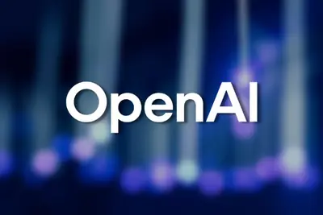
晶片與基礎設施
重點cpofeynmannvidia
Nvidia 全面投產 Spectrum-X 光子交換機，並傳下一代 GPU 採用台積電 A16
Nvidia 宣布全面投產 Spectrum-X 乙太網路光子交換機，為全球首款量產的 200G/lane CPO 交換機系統，主要用於大規模 AI 訓練與推理集群，透過共封裝光學降低功耗與故障點。另據報導，Nvidia 下一代 GPU「Feynman」預計採用台積電 A16 製程，並導入 SoIC 3D 堆疊與 CPO 技術。
重點sk-hynix2027
SK集團會長：存儲漲價太快致歉，2027年短缺最嚴重
SK集團會長崔泰源表示，存儲晶片價格上漲過快，對客戶致歉，並稱2027年短缺將最嚴重，影響蘋果等終端企業。SK海力士正投資7200億美元擴產，目標2034年產能增至三倍。
gpuskogdeeper
法國新創Kog：GPU並非不適合代理工作流，深入挖掘推論潛力
法國新創Kog認為，GPU在代理工作流中表現不佳是誤解，他們正開發技術以更有效榨取GPU推論效能，提升AI代理效率。
理想汽車探索自研雲端推理晶片，沿用智駕晶片數據流架構
理想汽車正探索自研雲端推理晶片，採用與智駕晶片相同的數據流架構，項目仍處於早期階段。此舉旨在承接部分原本在GPU上運行的推理任務，如智駕模型數據處理、測試、仿真及大語言模型請求，並可與車端晶片共用設計與軟體工具，分攤研發成本。
hyperscalersnaturalgas
天然氣價格恐飆漲三倍，超大規模資料中心營運成本受威脅
新預測顯示，美國部分地區天然氣價格可能上漲三倍，導致超大規模資料中心為AI運算支付巨額能源費用，營運成本壓力大增。

政策與法規
重點amazon
研究證實AI生成書籍正侵蝕人類作者市場
新研究指出，AI生成書籍已對人類作者作品市場造成負面影響。美國版權局審查合理使用因素，認為AI生成內容可能損害原作品市場，引發版權爭議。
安全與倫理
重點spywareattackswarning
Apple警告用戶新型間諜軟體攻擊，建議開啟封鎖模式
Apple針對記者、政治人物等目標用戶發出間諜軟體攻擊警告，建議開啟Lockdown Mode以加強防護，並提供應對措施。
重點teamt5agentsafety
政府系統遭AI Agent攻擊，自主攻擊框架四天發動12波入侵
資安報告揭露，一套基於Hermes與OpenClaw框架的自主式AI攻擊系統，於2026年7月針對亞洲某國政府機關發動為期四天、共12波的入侵，完成從偵察到資料外洩的完整攻擊鏈，並自主研究漏洞、自我修正。
opensourceopenai
開源工具可移除 Anthropic、OpenAI 等模型的 AI 浮水印
有開發者釋出開源工具，旨在移除 Anthropic、OpenAI 等 AI 模型生成內容的浮水印，挑戰各家公司對 AI 內容的溯源機制。此舉引發對 AI 內容標記有效性的討論。

- 科技新報 TechNews 開源工具挑戰 AI 溯源，可移除 Anthropic、OpenAI 等模型浮水印
regulationagentstier
金融 AI 代理安全報告：分階段放權是機構導入底線
Gartner 預估 2026 年底 40% 企業應用將嵌入任務型 AI 代理，金融機構正將代理整合進支付、交易等核心領域。區塊鏈安全公司 Halborn 發布報告，提出企業級 AI 代理在金融基礎設施中的自主權分級框架，強調分階段放權以降低風險。
- TechOrange 科技報橘 【金融 AI 代理安全與防禦】AI Agents 直上支付與交易第一線，機構「分階段放權」才是安全底線
usingsuspectingcourt
男子疑法院用AI，在訴狀注入提示詞試圖贏官司
一名訴訟當事人懷疑法院使用AI審案，因此在法律文件中注入提示詞，試圖影響判決。法官警告，自訴人濫用聊天機器人，顯示其 desperation。
skillchatgptclaude
第三方Skill安全嗎？跨平台通用性與資安檢查指南
Skill已成為跨Claude、ChatGPT、Gemini的開放格式，但格式通用不等於結果一致。下載第三方Skill前，建議先請AI列出檔案並解釋程式碼，以確保安全。

開源社群
重點2 家媒體報導metamarkzuckerberg
Meta 發布開源模型 Glimmer，祖克柏宣稱 AI 應屬於每個人
Meta 本週發布開源權重模型 Glimmer，任何人可下載並在自有硬體上運行，與其更強大但鎖在自家 API 的 Muse Spark 形成對比。祖克柏同步發表公開信，主張 AI 應「屬於每個人」而非由少數實驗室控制，但外界質疑其開放程度與動機。
- The Verge AI Mark Zuckerberg has an Instagzam
- TechCrunch AI Does Mark Zuckerberg really believe AI is ‘for everyone’?
- TechCrunch AI Meta’s ‘open’ AI, and a $250M deal gone very wrong
visionarytechwant
Tim O'Reilly：大型AI實驗室不懂用戶需求，開源才是王道
科技思想家Tim O'Reilly表示，大型AI實驗室未能理解用戶真正需求，他雖因AI受損，但仍支持開源AI，認為開源才能符合大眾利益。
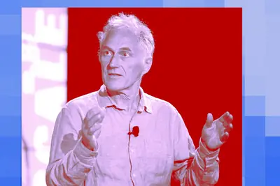
openfactorylinuxbuild
OpenFactory讓用戶一夜自建Linux發行版，AI工具潛力巨大
ZDNet記者實測OpenFactory，這款AI工具能協助用戶快速建立自訂Linux發行版，無需深入學習建置過程，被認為將成為重要工具。
其他
tagsclassify.hallucinate
部落格標籤新方法：讓 AI 幻覺再比對嵌入向量
Simon Willison 分享 Doug Turnbull 的解法：當部落格標籤過多無法一次餵給 LLM 時，先讓模型自由輸出標籤，再用向量嵌入比對既有標籤，以完成分類。
- Simon Willison Don't classify. Hallucinate!